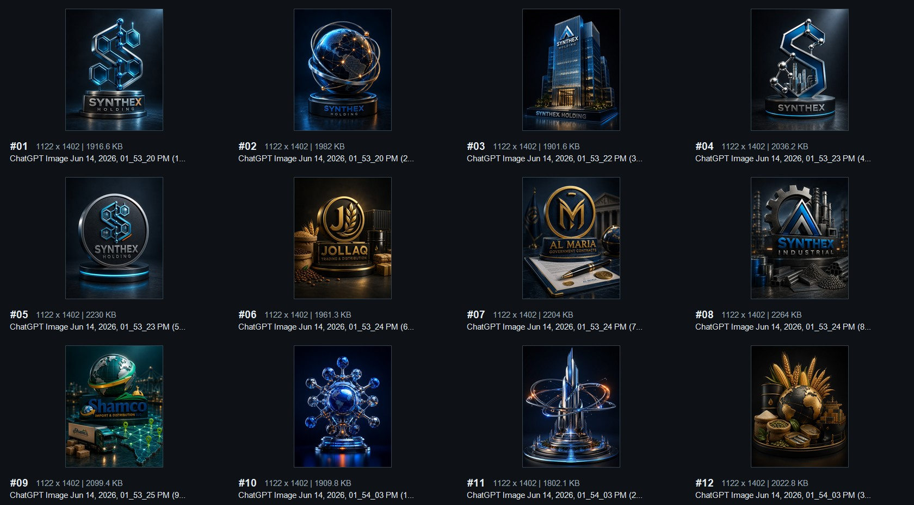
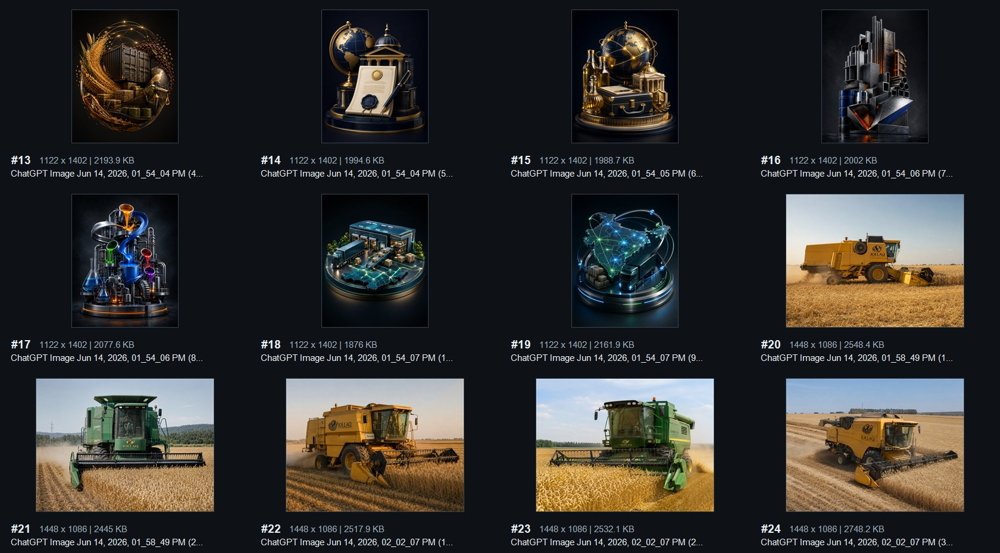
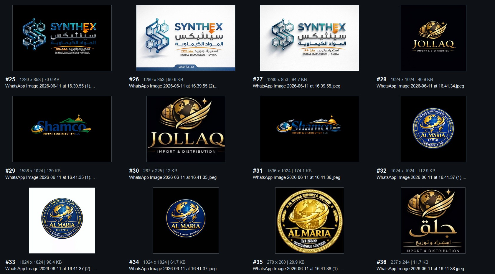
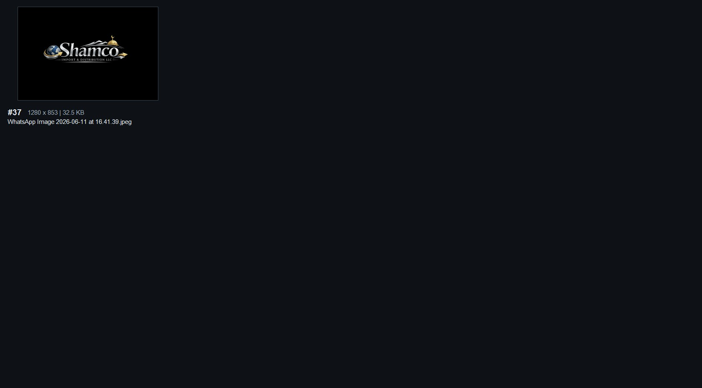

SYNTHEX Holding website
Discovery and asset audit
The workspace is greenfield. The supplied archive is a useful visual moodboard, but it is not yet a production-ready brand or content package.
Audit At A Glance
Key Findings
SYNTHEX, Al Maria, and SHAMCO have conflicting variants. Al Maria includes a visible "EKPORT" typo. SYNTHEX Industrial has no official mark.
The build prompt is the only content source. Timeline, contracts, legal names, contact information, Arabic copy, and corporate claims still require client confirmation.
The visual set is strong enough to establish material worlds and a 3D storyboard, but invented buildings, documents, routes, machinery branding, and maps cannot be presented as factual proof.
SYNTHEX consistently supports navy, blue, cyan, orange, chrome, graphite, and white. Subsidiary palettes remain provisional until official identity masters are selected.
Contact Sheets
IDs match the technical inventory and editorial review CSV files.




Provisional SYNTHEX Tokens
#062e52 navy
#075c91 blue
#16a8b8 cyan
#f7941d orange
#b7c4cc silver
#090c10 graphite
#f4f7f8 white
These are sampled/refined website tokens, not certified brand values. JPEG gradients and compression prevent exact color recovery.
Proposed Technical Direction
| Concern | Recommendation |
|---|---|
| Application | Next.js App Router + TypeScript, statically generated where possible |
| 3D | React Three Fiber + Three.js + Drei, isolated behind lazy boundaries |
| Motion | GSAP + ScrollTrigger as the single timeline/scroll system |
| Styling | CSS Modules and semantic global custom properties |
| Bilingual routes | /en/#company and /ar/#company with structured content and true RTL |
| State | Typed company configuration plus a small navigation reducer/controller |
| Verification | Playwright flows, focused unit tests, accessibility checks, production build budgets |
Proposed Phase 1 Blueprint
- Lock sitemap and the one-page narrative from holding hero through four company worlds and the unified conclusion.
- Define the five-state navbar model and history/hash/scroll precedence rules.
- Draft typed company, theme, scene, navigation, and bilingual content schemas.
- Produce desktop and mobile low-fidelity wireframes.
- Build a browser structural prototype with hashes, keyboard navigation, theme transitions, and RTL direction.
- Storyboard each 3D scene at static, low-power, and full-quality tiers.
- Return with an asset approval matrix and an explicit missing-content register before Phase 2.
Approval Dependencies
Phase 1 can proceed with provisional marks, but production visual design should not lock until the official logo variant for each company, the corporate profile, Arabic copy, authentic media, legal/contact details, and claim approvals are supplied.